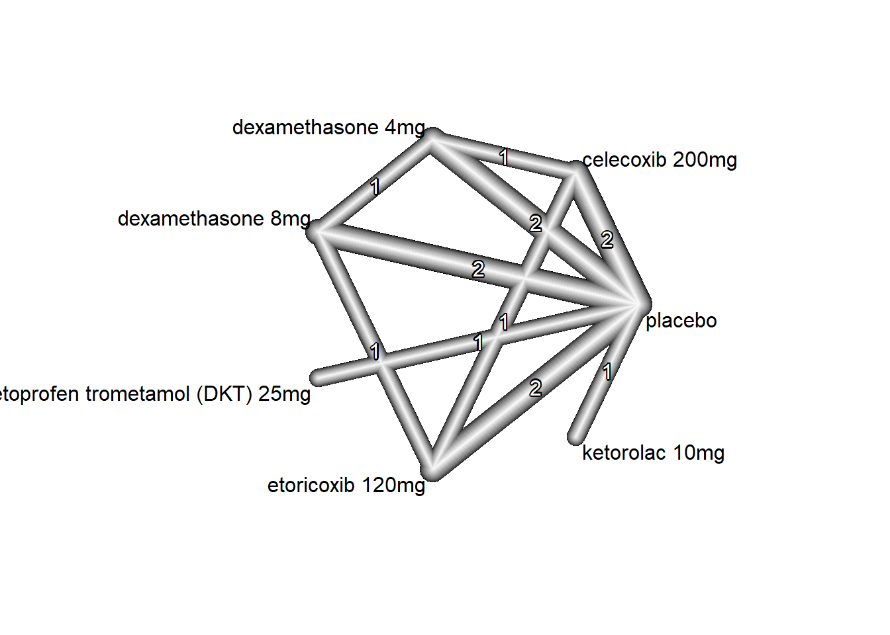
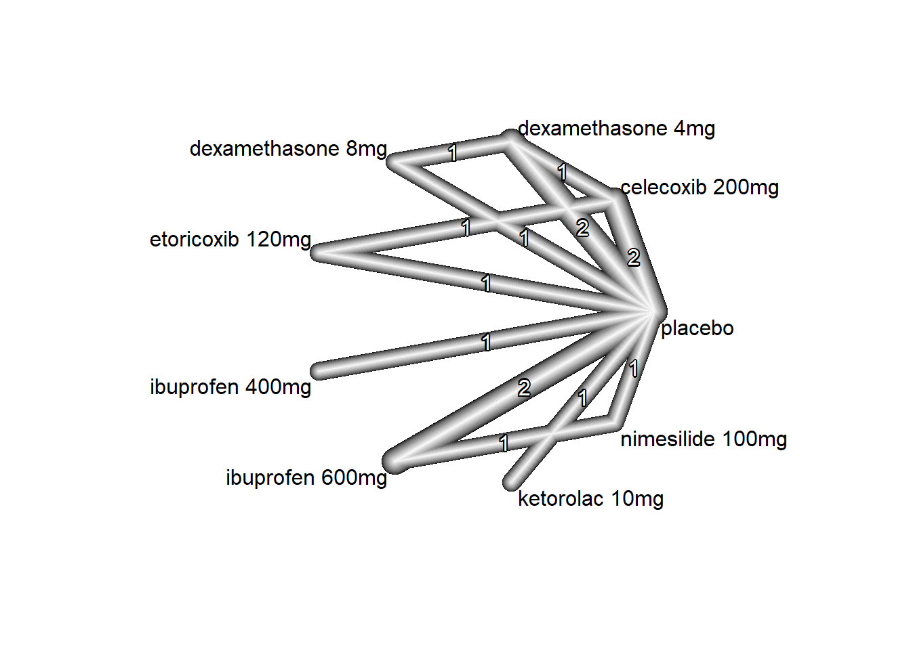
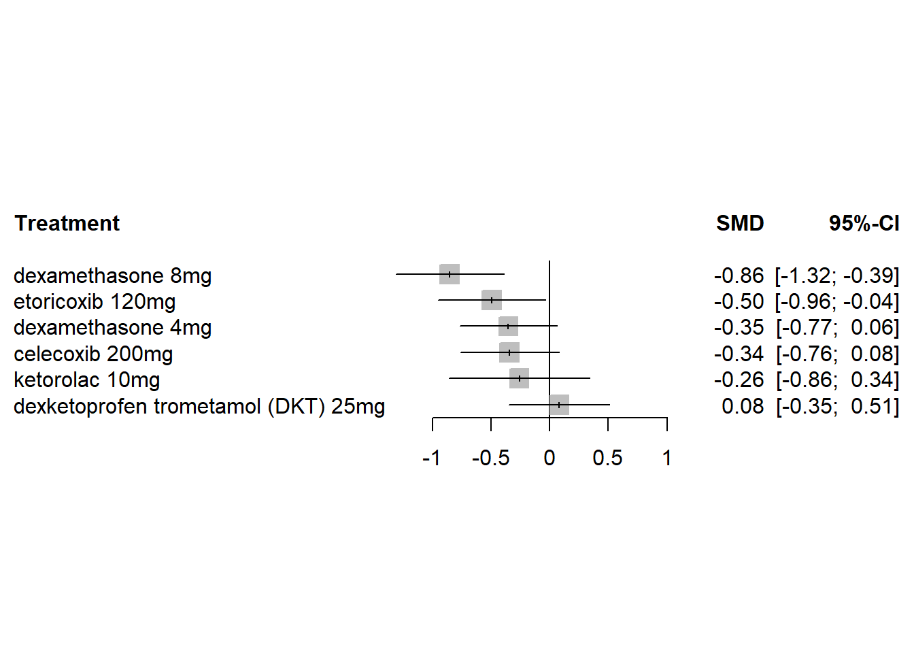
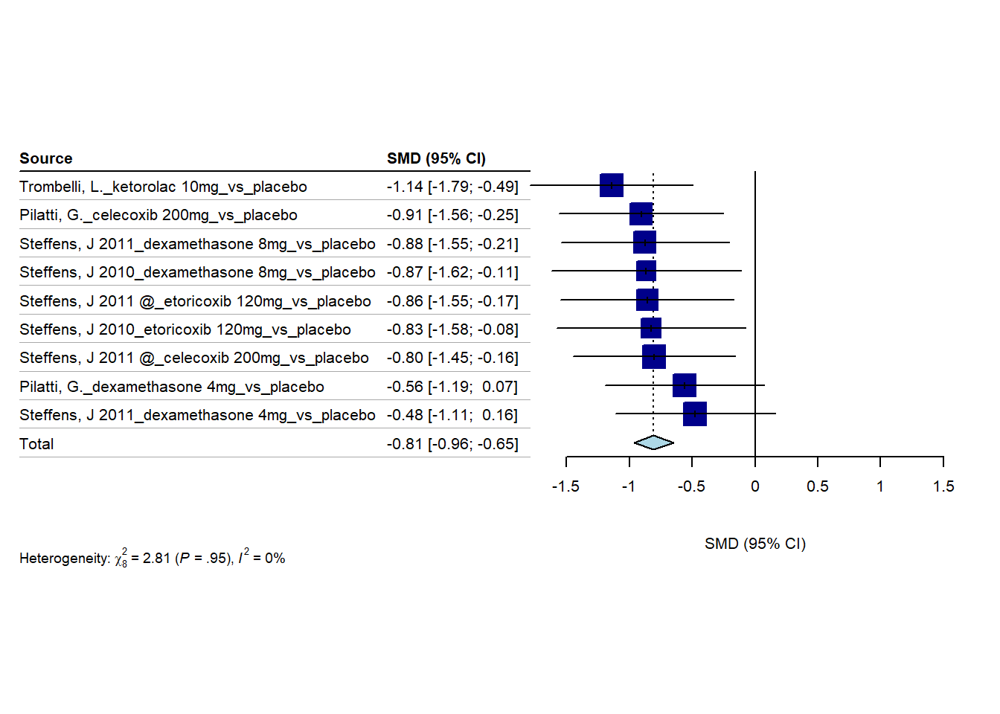
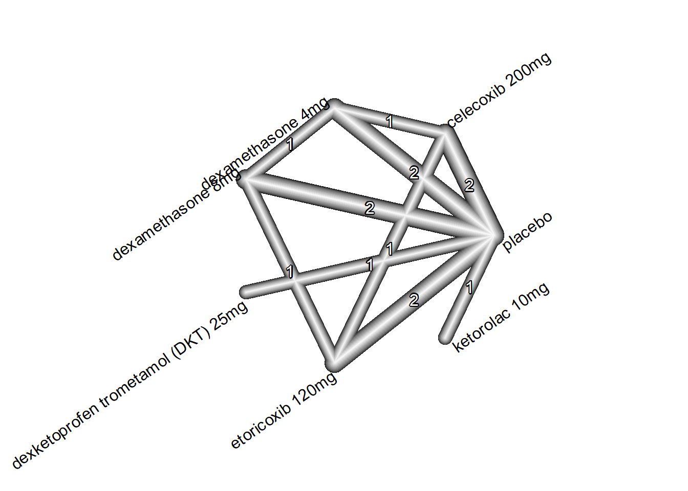

3/8/2023
2023-03-08
Last updated: 2023-09-11
Checks: 6 1
Knit directory: Collaborations/
This reproducible R Markdown analysis was created with workflowr (version 1.7.0). The Checks tab describes the reproducibility checks that were applied when the results were created. The Past versions tab lists the development history.
The R Markdown file has unstaged changes. To know which version of
the R Markdown file created these results, you’ll want to first commit
it to the Git repo. If you’re still working on the analysis, you can
ignore this warning. When you’re finished, you can run
wflow_publish to commit the R Markdown file and build the
HTML.
Great job! The global environment was empty. Objects defined in the global environment can affect the analysis in your R Markdown file in unknown ways. For reproduciblity it’s best to always run the code in an empty environment.
The command set.seed(20210523) was run prior to running
the code in the R Markdown file. Setting a seed ensures that any results
that rely on randomness, e.g. subsampling or permutations, are
reproducible.
Great job! Recording the operating system, R version, and package versions is critical for reproducibility.
Nice! There were no cached chunks for this analysis, so you can be confident that you successfully produced the results during this run.
Great job! Using relative paths to the files within your workflowr project makes it easier to run your code on other machines.
Great! You are using Git for version control. Tracking code development and connecting the code version to the results is critical for reproducibility.
The results in this page were generated with repository version 10d8e30. See the Past versions tab to see a history of the changes made to the R Markdown and HTML files.
Note that you need to be careful to ensure that all relevant files for
the analysis have been committed to Git prior to generating the results
(you can use wflow_publish or
wflow_git_commit). workflowr only checks the R Markdown
file, but you know if there are other scripts or data files that it
depends on. Below is the status of the Git repository when the results
were generated:
Ignored files:
Ignored: analysis/.Rhistory
Ignored: analysis/2022_Mar2_Marinho_cache/
Ignored: analysis/figure/
Unstaged changes:
Modified: analysis/2023_0301_Christos.Rmd
Note that any generated files, e.g. HTML, png, CSS, etc., are not included in this status report because it is ok for generated content to have uncommitted changes.
These are the previous versions of the repository in which changes were
made to the R Markdown (analysis/2023_0301_Christos.Rmd)
and HTML (docs/2023_0301_Christos.html) files. If you’ve
configured a remote Git repository (see ?wflow_git_remote),
click on the hyperlinks in the table below to view the files as they
were in that past version.
| File | Version | Author | Date | Message |
|---|---|---|---|---|
| Rmd | 10d8e30 | Han | 2023-09-07 | 9/7/2023 |
| html | 10d8e30 | Han | 2023-09-07 | 9/7/2023 |
| Rmd | a627596 | Han | 2023-09-06 | 9/6/2023 |
| html | a627596 | Han | 2023-09-06 | 9/6/2023 |
| Rmd | 67f6d95 | Han | 2023-09-05 | 9/5/2023 |
| html | 67f6d95 | Han | 2023-09-05 | 9/5/2023 |
| Rmd | d16b445 | Han | 2023-08-31 | 8/31/2023 |
| html | d16b445 | Han | 2023-08-31 | 8/31/2023 |
| Rmd | 26fda45 | Han | 2023-08-29 | 8/29/2023 |
| html | 26fda45 | Han | 2023-08-29 | 8/29/2023 |
| Rmd | a0cb15c | Han | 2023-08-25 | 8/25/2023 |
| html | a0cb15c | Han | 2023-08-25 | 8/25/2023 |
| Rmd | 91a9a58 | Han | 2023-08-25 | 8/25/2023 |
| html | 91a9a58 | Han | 2023-08-25 | 8/25/2023 |
| Rmd | 987f10a | Han | 2023-08-24 | 8/24/2023 |
| html | 987f10a | Han | 2023-08-24 | 8/24/2023 |
| Rmd | 5e8c202 | Han | 2023-08-23 | 8/23/2023 |
| html | 5e8c202 | Han | 2023-08-23 | 8/23/2023 |
| Rmd | 64befe3 | Han | 2023-07-19 | 7/19/2023 |
| html | 64befe3 | Han | 2023-07-19 | 7/19/2023 |
| Rmd | 04bd40f | Han | 2023-06-26 | 6/26/2023 |
| html | 04bd40f | Han | 2023-06-26 | 6/26/2023 |
| Rmd | a851367 | Han | 2023-06-26 | 6/26/2023 |
| html | a851367 | Han | 2023-06-26 | 6/26/2023 |
| Rmd | 48884b2 | Han | 2023-06-26 | 6/26/2023 |
| html | 48884b2 | Han | 2023-06-26 | 6/26/2023 |
| Rmd | 31f8333 | Han | 2023-06-07 | 6/7/2023 |
| html | 31f8333 | Han | 2023-06-07 | 6/7/2023 |
| Rmd | f296096 | Han | 2023-06-06 | 6/6/2023 |
| html | f296096 | Han | 2023-06-06 | 6/6/2023 |
| Rmd | e9ee5e1 | Han | 2023-06-06 | 6/6/2023 |
| html | e9ee5e1 | Han | 2023-06-06 | 6/6/2023 |
| Rmd | 15e0c71 | Han | 2023-06-05 | 6/5/2023 |
| Rmd | 74ade81 | Han | 2023-05-24 | 5/24/2023 |
| Rmd | fb9d51e | Han | 2023-05-17 | 5/17/2023 |
| html | fb9d51e | Han | 2023-05-17 | 5/17/2023 |
| Rmd | 89ce1ba | Han | 2023-05-15 | 5/15/2023 |
| html | 89ce1ba | Han | 2023-05-15 | 5/15/2023 |
| Rmd | e341292 | Han | 2023-05-15 | 5/15/2023 |
| html | e341292 | Han | 2023-05-15 | 5/15/2023 |
| Rmd | 0c70ed0 | Han | 2023-05-15 | 5/15/2023 |
| html | 0c70ed0 | Han | 2023-05-15 | 5/15/2023 |
| Rmd | d3ee077 | Han | 2023-04-10 | 4/10/2023 |
| html | d3ee077 | Han | 2023-04-10 | 4/10/2023 |
| Rmd | ecabd2b | Han | 2023-04-03 | 4/3/2023 |
| html | ecabd2b | Han | 2023-04-03 | 4/3/2023 |
| Rmd | c891d01 | Han | 2023-03-20 | 3/20/2023 |
| html | c891d01 | Han | 2023-03-20 | 3/20/2023 |
| Rmd | 1f23563 | Han | 2023-03-08 | 3/8/2023 |
| html | 1f23563 | Han | 2023-03-08 | 3/8/2023 |
one hour
sample data
forest plot

For an individual study, a square with treatment estimate in the center and confidence interval as line extending either side of the square. The size of this square is determined by the weight.
vertical reference lines indicates the point of no effect
For meta-analysis results, a diamond with treatment estimate in the center and right and left side corresponding to lower and upper confidence limits
heterogeneity (null hypothesis: all studies estimate the same effect) is measured by Cochran’s Q, which is calculated as the weighted sum of squared differences between individual study effects and the pooled effect across studies, following \(\chi^2\) distribution with number of studies-1 DF.
\(I^2\) statistic describes the percentage of variation across studies that is due to heterogeneity rather than chance more details.
n1=63; s1=21; n2=61; s2=25
# Calculate s_pooled
s_pooled <- sqrt( # s_pooled is pooled standard deviation
(((n1-1)*s1^2) + ((n2-1)*s2^2))/
((n1-1)+(n2-1))
)
# Calculate the standard error
se <- s_pooled*sqrt((1/n1)+(1/n2))
#se
mean1=10; mean2=19
(mean1-mean2)/s_pooled # this is SMD [1] -0.390386network meta-analysis

- overall comparison structure
- direct links mean there are direct comparison, otherwise indirect comparisons
- degree of thickness represents how often we find a specific comparison
- numbers on the edge indicate how many studies involve that comparison

- a mean path length > 2 means that a comparison estimate should be interpreted with particular caution.
P-score
nimesilide 0.8993
ibuprofen 0.7378
dexamethasone 8mg 0.5730
ketorolac 10mg 0.5706
etoricoxib 120mg 0.4878
celecoxib 200mg 0.3497
placebo 0.1927
dexamethasone 4mg 0.1890
Original data (with adjusted standard errors for multi-arm studies):
treat1 treat2 TE seTE seTE.adj
Pearlman, B. ibuprofen placebo -0.3880 0.1814 0.6277
Pereira, G. ibuprofen placebo -0.6883 0.2807 0.6632
Pilatti, G. dexamethasone 4mg placebo -0.1593 0.3168 0.8310
Pilatti, G. celecoxib 200mg placebo -0.4462 0.3205 0.8353
Santos, B. ibuprofen placebo -2.1752 0.4065 0.8951
Santos, B. nimesilide placebo -2.5894 0.4387 0.9495
Steffens, J 2011 dexamethasone 4mg placebo 0.2079 0.3213 0.8279
Steffens, J 2011 dexamethasone 8mg placebo -0.6333 0.3338 0.8421
Steffens, J 2011 @ celecoxib 200mg placebo -0.1153 0.3165 0.8234
Steffens, J 2011 @ etoricoxib 120mg placebo -0.4563 0.3402 0.8508
Trombelli, L. ketorolac 10mg placebo -0.7157 0.3156 0.6787
Pilatti, G. celecoxib 200mg dexamethasone 4mg -0.2984 0.3182 0.8325
Santos, B. ibuprofen nimesilide -0.1298 0.3166 0.7954
Steffens, J 2011 dexamethasone 4mg dexamethasone 8mg 0.8134 0.3437 0.8544
Steffens, J 2011 @ celecoxib 200mg etoricoxib 120mg 0.3259 0.3379 0.8479
narms multiarm
Pearlman, B. 2
Pereira, G. 2
Pilatti, G. 3 *
Pilatti, G. 3 *
Santos, B. 3 *
Santos, B. 3 *
Steffens, J 2011 3 *
Steffens, J 2011 3 *
Steffens, J 2011 @ 3 *
Steffens, J 2011 @ 3 *
Trombelli, L. 2
Pilatti, G. 3 *
Santos, B. 3 *
Steffens, J 2011 3 *
Steffens, J 2011 @ 3 *
Number of treatment arms (by study):
narms
Pearlman, B. 2
Pereira, G. 2
Trombelli, L. 2
Pilatti, G. 3
Santos, B. 3
Steffens, J 2011 3
Steffens, J 2011 @ 3
Results (random effects model):
treat1 treat2 SMD
Pearlman, B. ibuprofen placebo -1.0484
Pereira, G. ibuprofen placebo -1.0484
Pilatti, G. dexamethasone 4mg placebo 0.0535
Pilatti, G. celecoxib 200mg placebo -0.2485
Santos, B. ibuprofen placebo -1.0484
Santos, B. nimesilide placebo -1.6076
Steffens, J 2011 dexamethasone 4mg placebo 0.0535
Steffens, J 2011 dexamethasone 8mg placebo -0.6956
Steffens, J 2011 @ celecoxib 200mg placebo -0.2485
Steffens, J 2011 @ etoricoxib 120mg placebo -0.5155
Trombelli, L. ketorolac 10mg placebo -0.7157
Pilatti, G. celecoxib 200mg dexamethasone 4mg -0.3020
Santos, B. ibuprofen nimesilide 0.5592
Steffens, J 2011 dexamethasone 4mg dexamethasone 8mg 0.7491
Steffens, J 2011 @ celecoxib 200mg etoricoxib 120mg 0.2670
95%-CI
Pearlman, B. [-1.8050; -0.2919]
Pereira, G. [-1.8050; -0.2919]
Pilatti, G. [-0.8572; 0.9642]
Pilatti, G. [-1.1592; 0.6623]
Santos, B. [-1.8050; -0.2919]
Santos, B. [-2.8827; -0.3325]
Steffens, J 2011 [-0.8572; 0.9642]
Steffens, J 2011 [-1.9539; 0.5626]
Steffens, J 2011 @ [-1.1592; 0.6623]
Steffens, J 2011 @ [-1.7782; 0.7472]
Trombelli, L. [-2.0460; 0.6146]
Pilatti, G. [-1.3902; 0.7863]
Santos, B. [-0.6760; 1.7943]
Steffens, J 2011 [-0.5139; 2.0122]
Steffens, J 2011 @ [-0.9945; 1.5286]
Number of studies: k = 7
Number of pairwise comparisons: m = 15
Number of treatments: n = 8
Number of designs: d = 6
Random effects model
Treatment estimate (sm = 'SMD', comparison: other treatments vs 'placebo'):
SMD 95%-CI z p-value
celecoxib 200mg -0.2485 [-1.1592; 0.6623] -0.53 0.5928
dexamethasone 4mg 0.0535 [-0.8572; 0.9642] 0.12 0.9083
dexamethasone 8mg -0.6956 [-1.9539; 0.5626] -1.08 0.2786
etoricoxib 120mg -0.5155 [-1.7782; 0.7472] -0.80 0.4236
ibuprofen -1.0484 [-1.8050; -0.2919] -2.72 0.0066
ketorolac 10mg -0.7157 [-2.0460; 0.6146] -1.05 0.2917
nimesilide -1.6076 [-2.8827; -0.3325] -2.47 0.0135
placebo . . . .
Quantifying heterogeneity / inconsistency:
tau^2 = 0.3611; tau = 0.6009; I^2 = 80.6% [54.5%; 91.7%]
Tests of heterogeneity (within designs) and inconsistency (between designs):
Q d.f. p-value
Total 20.61 4 0.0004
Within designs 0.81 1 0.3689
Between designs 16.28 3 0.0010- higher P-score, the better it is
three hours
sample data
forest plot

network meta-analysis

- overall comparison structure
- direct links mean there are direct comparison, otherwise indirect comparisons
- degree of thickness represents how often we find a specific comparison
- numbers on the edge indicate how many studies involve that comparison

- a mean path length > 2 means that a comparison estimate should be interpreted with particular caution.
P-score
ketorolac 10mg 0.8304
dexamethasone 8mg 0.6923
etoricoxib 120mg 0.6738
celecoxib 200mg 0.5628
dexamethasone 4mg 0.2370
placebo 0.0038
Original data (with adjusted standard errors for multi-arm studies):
treat1 treat2 TE seTE seTE.adj
Pilatti, G. dexamethasone 4mg placebo -0.5609 0.3230 0.3919
Pilatti, G. celecoxib 200mg placebo -0.9063 0.3337 0.4196
Steffens, J 2011 dexamethasone 4mg placebo -0.4761 0.3253 0.3886
Steffens, J 2011 dexamethasone 8mg placebo -0.8762 0.3417 0.4282
Steffens, J 2011 @ celecoxib 200mg placebo -0.8036 0.3300 0.3932
Steffens, J 2011 @ etoricoxib 120mg placebo -0.8585 0.3520 0.4491
Steffens, J 2010 dexamethasone 8mg placebo -0.8658 0.3842 0.4790
Steffens, J 2010 etoricoxib 120mg placebo -0.8267 0.3826 0.4745
Trombelli, L. ketorolac 10mg placebo -1.1414 0.3312 0.3312
Pilatti, G. celecoxib 200mg dexamethasone 4mg -0.4470 0.3206 0.3864
Steffens, J 2011 dexamethasone 4mg dexamethasone 8mg 0.5575 0.3359 0.4127
Steffens, J 2011 @ celecoxib 200mg etoricoxib 120mg 0.2721 0.3371 0.4085
Steffens, J 2010 dexamethasone 8mg etoricoxib 120mg -0.0671 0.3653 0.4346
narms multiarm
Pilatti, G. 3 *
Pilatti, G. 3 *
Steffens, J 2011 3 *
Steffens, J 2011 3 *
Steffens, J 2011 @ 3 *
Steffens, J 2011 @ 3 *
Steffens, J 2010 3 *
Steffens, J 2010 3 *
Trombelli, L. 2
Pilatti, G. 3 *
Steffens, J 2011 3 *
Steffens, J 2011 @ 3 *
Steffens, J 2010 3 *
Number of treatment arms (by study):
narms
Trombelli, L. 2
Pilatti, G. 3
Steffens, J 2011 3
Steffens, J 2011 @ 3
Steffens, J 2010 3
Results (random effects model):
treat1 treat2 SMD
Pilatti, G. dexamethasone 4mg placebo -0.4474
Pilatti, G. celecoxib 200mg placebo -0.8142
Steffens, J 2011 dexamethasone 4mg placebo -0.4474
Steffens, J 2011 dexamethasone 8mg placebo -0.9383
Steffens, J 2011 @ celecoxib 200mg placebo -0.8142
Steffens, J 2011 @ etoricoxib 120mg placebo -0.9209
Steffens, J 2010 dexamethasone 8mg placebo -0.9383
Steffens, J 2010 etoricoxib 120mg placebo -0.9209
Trombelli, L. ketorolac 10mg placebo -1.1414
Pilatti, G. celecoxib 200mg dexamethasone 4mg -0.3668
Steffens, J 2011 dexamethasone 4mg dexamethasone 8mg 0.4909
Steffens, J 2011 @ celecoxib 200mg etoricoxib 120mg 0.1067
Steffens, J 2010 dexamethasone 8mg etoricoxib 120mg -0.0174
95%-CI
Pilatti, G. [-0.8680; -0.0268]
Pilatti, G. [-1.2435; -0.3850]
Steffens, J 2011 [-0.8680; -0.0268]
Steffens, J 2011 [-1.4023; -0.4743]
Steffens, J 2011 @ [-1.2435; -0.3850]
Steffens, J 2011 @ [-1.3898; -0.4521]
Steffens, J 2010 [-1.4023; -0.4743]
Steffens, J 2010 [-1.3898; -0.4521]
Trombelli, L. [-1.7904; -0.4923]
Pilatti, G. [-0.8678; 0.1342]
Steffens, J 2011 [-0.0362; 1.0179]
Steffens, J 2011 @ [-0.4239; 0.6373]
Steffens, J 2010 [-0.5715; 0.5367]
Number of studies: k = 5
Number of pairwise comparisons: m = 13
Number of treatments: n = 6
Number of designs: d = 5
Random effects model
Treatment estimate (sm = 'SMD', comparison: other treatments vs 'placebo'):
SMD 95%-CI z p-value
celecoxib 200mg -0.8142 [-1.2435; -0.3850] -3.72 0.0002
dexamethasone 4mg -0.4474 [-0.8680; -0.0268] -2.08 0.0371
dexamethasone 8mg -0.9383 [-1.4023; -0.4743] -3.96 < 0.0001
etoricoxib 120mg -0.9209 [-1.3898; -0.4521] -3.85 0.0001
ketorolac 10mg -1.1414 [-1.7904; -0.4923] -3.45 0.0006
placebo . . . .
Quantifying heterogeneity / inconsistency:
tau^2 = 0; tau = 0; I^2 = 0% [0.0%; 79.2%]
Tests of heterogeneity (within designs) and inconsistency (between designs):
Q d.f. p-value
Total 0.49 4 0.9747
Within designs 0.00 0 --
Between designs 0.08 4 0.9993- higher P-score, the better it is
6 hours
sample data
forest plot

network meta-analysis


- a mean path length > 2 means that a comparison estimate should be interpreted with particular caution.
P-score
nimesilide 0.8839
etoricoxib 120mg 0.7308
dexamethasone 8mg 0.6725
ibuprofen 0.6557
celecoxib 200mg 0.4840
ketorolac 10mg 0.3587
dexamethasone 4mg 0.1852
placebo 0.0292
Original data (with adjusted standard errors for multi-arm studies):
treat1 treat2 TE seTE seTE.adj
Pereira, G. ibuprofen placebo -1.0869 0.2930 0.2930
Pilatti, G. dexamethasone 4mg placebo -0.2459 0.3175 0.3849
Pilatti, G. celecoxib 200mg placebo -0.6464 0.3252 0.4040
Santos, B. ibuprofen placebo -0.3249 0.3185 0.3792
Santos, B. nimesilide placebo -1.1529 0.3440 0.4488
Steffens, J 2011 dexamethasone 4mg placebo -0.3174 0.3226 0.3832
Steffens, J 2011 dexamethasone 8mg placebo -0.8470 0.3406 0.4257
Steffens, J 2011 @ celecoxib 200mg placebo -0.6920 0.3265 0.3866
Steffens, J 2011 @ etoricoxib 120mg placebo -0.8361 0.3512 0.4477
Steffens, J 2010 dexamethasone 8mg placebo -0.7153 0.3783 0.4681
Steffens, J 2010 etoricoxib 120mg placebo -0.7312 0.3788 0.4697
Trombelli, L. ketorolac 10mg placebo -0.4511 0.3093 0.3093
Pilatti, G. celecoxib 200mg dexamethasone 4mg -0.4091 0.3199 0.3904
Santos, B. ibuprofen nimesilide 0.2890 0.3180 0.3783
Steffens, J 2011 dexamethasone 4mg dexamethasone 8mg 0.6454 0.3383 0.4192
Steffens, J 2011 @ celecoxib 200mg etoricoxib 120mg 0.3984 0.3391 0.4138
Steffens, J 2010 dexamethasone 8mg etoricoxib 120mg 0.0721 0.3653 0.4377
narms multiarm
Pereira, G. 2
Pilatti, G. 3 *
Pilatti, G. 3 *
Santos, B. 3 *
Santos, B. 3 *
Steffens, J 2011 3 *
Steffens, J 2011 3 *
Steffens, J 2011 @ 3 *
Steffens, J 2011 @ 3 *
Steffens, J 2010 3 *
Steffens, J 2010 3 *
Trombelli, L. 2
Pilatti, G. 3 *
Santos, B. 3 *
Steffens, J 2011 3 *
Steffens, J 2011 @ 3 *
Steffens, J 2010 3 *
Number of treatment arms (by study):
narms
Pereira, G. 2
Trombelli, L. 2
Pilatti, G. 3
Santos, B. 3
Steffens, J 2011 3
Steffens, J 2011 @ 3
Steffens, J 2010 3
Results (random effects model):
treat1 treat2 SMD
Pereira, G. ibuprofen placebo -0.8104
Pilatti, G. dexamethasone 4mg placebo -0.2401
Pilatti, G. celecoxib 200mg placebo -0.6208
Santos, B. ibuprofen placebo -0.8104
Santos, B. nimesilide placebo -1.1216
Steffens, J 2011 dexamethasone 4mg placebo -0.2401
Steffens, J 2011 dexamethasone 8mg placebo -0.8188
Steffens, J 2011 @ celecoxib 200mg placebo -0.6208
Steffens, J 2011 @ etoricoxib 120mg placebo -0.8788
Steffens, J 2010 dexamethasone 8mg placebo -0.8188
Steffens, J 2010 etoricoxib 120mg placebo -0.8788
Trombelli, L. ketorolac 10mg placebo -0.4511
Pilatti, G. celecoxib 200mg dexamethasone 4mg -0.3807
Santos, B. ibuprofen nimesilide 0.3112
Steffens, J 2011 dexamethasone 4mg dexamethasone 8mg 0.5787
Steffens, J 2011 @ celecoxib 200mg etoricoxib 120mg 0.2581
Steffens, J 2010 dexamethasone 8mg etoricoxib 120mg 0.0601
95%-CI
Pereira, G. [-1.2330; -0.3878]
Pilatti, G. [-0.6572; 0.1770]
Pilatti, G. [-1.0442; -0.1974]
Santos, B. [-1.2330; -0.3878]
Santos, B. [-1.7400; -0.5032]
Steffens, J 2011 [-0.6572; 0.1770]
Steffens, J 2011 [-1.2805; -0.3571]
Steffens, J 2011 @ [-1.0442; -0.1974]
Steffens, J 2011 @ [-1.3467; -0.4110]
Steffens, J 2010 [-1.2805; -0.3571]
Steffens, J 2010 [-1.3467; -0.4110]
Trombelli, L. [-1.0574; 0.1551]
Pilatti, G. [-0.8802; 0.1188]
Santos, B. [-0.2822; 0.9046]
Steffens, J 2011 [ 0.0508; 1.1066]
Steffens, J 2011 @ [-0.2729; 0.7891]
Steffens, J 2010 [-0.4947; 0.6148]
Number of studies: k = 7
Number of pairwise comparisons: m = 17
Number of treatments: n = 8
Number of designs: d = 7
Random effects model
Treatment estimate (sm = 'SMD', comparison: other treatments vs 'placebo'):
SMD 95%-CI z p-value
celecoxib 200mg -0.6208 [-1.0442; -0.1974] -2.87 0.0041
dexamethasone 4mg -0.2401 [-0.6572; 0.1770] -1.13 0.2593
dexamethasone 8mg -0.8188 [-1.2805; -0.3571] -3.48 0.0005
etoricoxib 120mg -0.8788 [-1.3467; -0.4110] -3.68 0.0002
ibuprofen -0.8104 [-1.2330; -0.3878] -3.76 0.0002
ketorolac 10mg -0.4511 [-1.0574; 0.1551] -1.46 0.1447
nimesilide -1.1216 [-1.7400; -0.5032] -3.55 0.0004
placebo . . . .
Quantifying heterogeneity / inconsistency:
tau^2 = 0; tau = 0; I^2 = 0% [0.0%; 74.6%]
Tests of heterogeneity (within designs) and inconsistency (between designs):
Q d.f. p-value
Total 2.92 5 0.7116
Within designs 0.00 0 --
Between designs 3.20 5 0.66938 hours
sample data
forest plot

network meta-analysis


- a mean path length > 2 means that a comparison estimate should be interpreted with particular caution.
P-score
dexamethasone 8mg 0.9601
etoricoxib 120mg 0.6964
dexamethasone 4mg 0.5562
celecoxib 200mg 0.5435
ketorolac 10mg 0.4609
placebo 0.1601
dexketoprofen trometamol (DKT) 25mg 0.1228
Original data (with adjusted standard errors for multi-arm studies):
treat1 treat2
Pilatti, G. dexamethasone 4mg placebo
Pilatti, G. celecoxib 200mg placebo
Sanchez-Perez, A. dexketoprofen trometamol (DKT) 25mg placebo
Steffens, J 2011 dexamethasone 4mg placebo
Steffens, J 2011 dexamethasone 8mg placebo
Steffens, J 2011 @ celecoxib 200mg placebo
Steffens, J 2011 @ etoricoxib 120mg placebo
Steffens, J 2010 dexamethasone 8mg placebo
Steffens, J 2010 etoricoxib 120mg placebo
Trombelli, L. ketorolac 10mg placebo
Pilatti, G. celecoxib 200mg dexamethasone 4mg
Steffens, J 2011 dexamethasone 4mg dexamethasone 8mg
Steffens, J 2011 @ celecoxib 200mg etoricoxib 120mg
Steffens, J 2010 dexamethasone 8mg etoricoxib 120mg
TE seTE seTE.adj narms multiarm
Pilatti, G. -0.2302 0.3174 0.3853 3 *
Pilatti, G. -0.6324 0.3248 0.4039 3 *
Sanchez-Perez, A. 0.0810 0.2196 0.2196 2
Steffens, J 2011 -0.2592 0.3218 0.3820 3 *
Steffens, J 2011 -0.8750 0.3417 0.4291 3 *
Steffens, J 2011 @ -0.3922 0.3196 0.3787 3 *
Steffens, J 2011 @ -0.4256 0.3396 0.4259 3 *
Steffens, J 2010 -0.6869 0.3773 0.4669 3 *
Steffens, J 2010 -0.5881 0.3741 0.4588 3 *
Trombelli, L. -0.2606 0.3065 0.3065 2
Pilatti, G. 0.3181 0.3184 0.3877 3 *
Steffens, J 2011 0.5971 0.3370 0.4161 3 *
Steffens, J 2011 @ 0.1630 0.3360 0.4160 3 *
Steffens, J 2010 -0.3807 0.3689 0.4466 3 *
Number of treatment arms (by study):
narms
Sanchez-Perez, A. 2
Trombelli, L. 2
Pilatti, G. 3
Steffens, J 2011 3
Steffens, J 2011 @ 3
Steffens, J 2010 3
Results (random effects model):
treat1 treat2
Pilatti, G. dexamethasone 4mg placebo
Pilatti, G. celecoxib 200mg placebo
Sanchez-Perez, A. dexketoprofen trometamol (DKT) 25mg placebo
Steffens, J 2011 dexamethasone 4mg placebo
Steffens, J 2011 dexamethasone 8mg placebo
Steffens, J 2011 @ celecoxib 200mg placebo
Steffens, J 2011 @ etoricoxib 120mg placebo
Steffens, J 2010 dexamethasone 8mg placebo
Steffens, J 2010 etoricoxib 120mg placebo
Trombelli, L. ketorolac 10mg placebo
Pilatti, G. celecoxib 200mg dexamethasone 4mg
Steffens, J 2011 dexamethasone 4mg dexamethasone 8mg
Steffens, J 2011 @ celecoxib 200mg etoricoxib 120mg
Steffens, J 2010 dexamethasone 8mg etoricoxib 120mg
SMD 95%-CI
Pilatti, G. -0.3544 [-0.7701; 0.0613]
Pilatti, G. -0.3438 [-0.7635; 0.0760]
Sanchez-Perez, A. 0.0810 [-0.3495; 0.5115]
Steffens, J 2011 -0.3544 [-0.7701; 0.0613]
Steffens, J 2011 -0.8552 [-1.3176; -0.3928]
Steffens, J 2011 @ -0.3438 [-0.7635; 0.0760]
Steffens, J 2011 @ -0.4962 [-0.9560; -0.0364]
Steffens, J 2010 -0.8552 [-1.3176; -0.3928]
Steffens, J 2010 -0.4962 [-0.9560; -0.0364]
Trombelli, L. -0.2606 [-0.8613; 0.3401]
Pilatti, G. 0.0106 [-0.4861; 0.5074]
Steffens, J 2011 0.5008 [-0.0261; 1.0277]
Steffens, J 2011 @ 0.1524 [-0.3747; 0.6795]
Steffens, J 2010 -0.3591 [-0.9143; 0.1962]
Number of studies: k = 6
Number of pairwise comparisons: m = 14
Number of treatments: n = 7
Number of designs: d = 6
Random effects model
Treatment estimate (sm = 'SMD', comparison: other treatments vs 'placebo'):
SMD 95%-CI z p-value
celecoxib 200mg -0.3438 [-0.7635; 0.0760] -1.61 0.1085
dexamethasone 4mg -0.3544 [-0.7701; 0.0613] -1.67 0.0947
dexamethasone 8mg -0.8552 [-1.3176; -0.3928] -3.63 0.0003
dexketoprofen trometamol (DKT) 25mg 0.0810 [-0.3495; 0.5115] 0.37 0.7123
etoricoxib 120mg -0.4962 [-0.9560; -0.0364] -2.12 0.0344
ketorolac 10mg -0.2606 [-0.8613; 0.3401] -0.85 0.3952
placebo . . . .
Quantifying heterogeneity / inconsistency:
tau^2 = 0; tau = 0; I^2 = 0% [0.0%; 79.2%]
Tests of heterogeneity (within designs) and inconsistency (between designs):
Q d.f. p-value
Total 1.58 4 0.8127
Within designs 0.00 0 --
Between designs 0.53 4 0.970724 hours
sample data
forest plot

network meta-analysis


- a mean path length > 2 means that a comparison estimate should be interpreted with particular caution.
P-score
ibuprofen 0.9016
nimesilide 0.8157
etoricoxib 120mg 0.6874
dexamethasone 4mg 0.5206
celecoxib 200mg 0.4640
placebo 0.3814
dexketoprofen trometamol (DKT) 25mg 0.3374
ketorolac 10mg 0.2561
dexamethasone 8mg IV 0.1358
Original data (with adjusted standard errors for multi-arm studies):
treat1 treat2
Pereira, G. ibuprofen placebo
Pilatti, G. dexamethasone 4mg placebo
Pilatti, G. celecoxib 200mg placebo
Sanchez-Perez, A. dexketoprofen trometamol (DKT) 25mg placebo
Santos, B. ibuprofen placebo
Santos, B. nimesilide placebo
Steffens, J 2011 @ celecoxib 200mg placebo
Steffens, J 2011 @ etoricoxib 120mg placebo
Steffens, J 2010 etoricoxib 120mg placebo
Trombelli, L. ketorolac 10mg placebo
Vieth, M. dexamethasone 8mg IV placebo
Pilatti, G. celecoxib 200mg dexamethasone 4mg
Santos, B. ibuprofen nimesilide
Steffens, J 2011 @ celecoxib 200mg etoricoxib 120mg
TE seTE seTE.adj narms multiarm
Pereira, G. -1.1866 0.2968 0.4705 2
Pilatti, G. -0.2776 0.3179 0.5933 3 *
Pilatti, G. -0.2845 0.3180 0.5934 3 *
Sanchez-Perez, A. 0.1033 0.2197 0.4260 2
Santos, B. -0.1351 0.3166 0.5845 3 *
Santos, B. -1.0668 0.3401 0.6242 3 *
Steffens, J 2011 @ 0.0000 0.3162 0.5794 3 *
Steffens, J 2011 @ -0.4875 0.3409 0.6183 3 *
Steffens, J 2010 -0.2840 0.3672 0.5178 2
Trombelli, L. 0.2635 0.3065 0.4767 2
Vieth, M. 0.5037 0.2466 0.4405 2
Pilatti, G. -0.0063 0.3162 0.5906 3 *
Santos, B. -0.4247 0.3201 0.5898 3 *
Steffens, J 2011 @ 0.4875 0.3409 0.6183 3 *
Number of treatment arms (by study):
narms
Pereira, G. 2
Sanchez-Perez, A. 2
Steffens, J 2010 2
Trombelli, L. 2
Vieth, M. 2
Pilatti, G. 3
Santos, B. 3
Steffens, J 2011 @ 3
Results (random effects model):
treat1 treat2
Pereira, G. ibuprofen placebo
Pilatti, G. dexamethasone 4mg placebo
Pilatti, G. celecoxib 200mg placebo
Sanchez-Perez, A. dexketoprofen trometamol (DKT) 25mg placebo
Santos, B. ibuprofen placebo
Santos, B. nimesilide placebo
Steffens, J 2011 @ celecoxib 200mg placebo
Steffens, J 2011 @ etoricoxib 120mg placebo
Steffens, J 2010 etoricoxib 120mg placebo
Trombelli, L. ketorolac 10mg placebo
Vieth, M. dexamethasone 8mg IV placebo
Pilatti, G. celecoxib 200mg dexamethasone 4mg
Santos, B. ibuprofen nimesilide
Steffens, J 2011 @ celecoxib 200mg etoricoxib 120mg
SMD 95%-CI
Pereira, G. -0.8839 [-1.5446; -0.2232]
Pilatti, G. -0.1898 [-1.0726; 0.6931]
Pilatti, G. -0.1090 [-0.7588; 0.5408]
Sanchez-Perez, A. 0.1033 [-0.7317; 0.9384]
Santos, B. -0.8839 [-1.5446; -0.2232]
Santos, B. -0.7458 [-1.6556; 0.1640]
Steffens, J 2011 @ -0.1090 [-0.7588; 0.5408]
Steffens, J 2011 @ -0.4346 [-1.1162; 0.2470]
Steffens, J 2010 -0.4346 [-1.1162; 0.2470]
Trombelli, L. 0.2635 [-0.6707; 1.1977]
Vieth, M. 0.5037 [-0.3596; 1.3671]
Pilatti, G. 0.0808 [-0.8010; 0.9626]
Santos, B. -0.1381 [-1.0343; 0.7580]
Steffens, J 2011 @ 0.3256 [-0.4746; 1.1258]
Number of studies: k = 8
Number of pairwise comparisons: m = 14
Number of treatments: n = 9
Number of designs: d = 8
Random effects model
Treatment estimate (sm = 'SMD', comparison: other treatments vs 'placebo'):
SMD 95%-CI z p-value
celecoxib 200mg -0.1090 [-0.7588; 0.5408] -0.33 0.7423
dexamethasone 4mg -0.1898 [-1.0726; 0.6931] -0.42 0.6736
dexamethasone 8mg IV 0.5037 [-0.3596; 1.3671] 1.14 0.2528
dexketoprofen trometamol (DKT) 25mg 0.1033 [-0.7317; 0.9384] 0.24 0.8084
etoricoxib 120mg -0.4346 [-1.1162; 0.2470] -1.25 0.2114
ibuprofen -0.8839 [-1.5446; -0.2232] -2.62 0.0087
ketorolac 10mg 0.2635 [-0.6707; 1.1977] 0.55 0.5804
nimesilide -0.7458 [-1.6556; 0.1640] -1.61 0.1081
placebo . . . .
Quantifying heterogeneity / inconsistency:
tau^2 = 0.1332; tau = 0.3650; I^2 = 55.8% [0.0%; 85.4%]
Tests of heterogeneity (within designs) and inconsistency (between designs):
Q d.f. p-value
Total 6.79 3 0.0790
Within designs 0.00 0 --
Between designs 6.59 3 0.08623 days
sample data
forest plot

network meta-analysis


- a mean path length > 2 means that a comparison estimate should be interpreted with particular caution.
P-score
nimesilide 0.6466
etoricoxib 120mg 0.6332
ibuprofen 0.6301
celecoxib 200mg 0.5738
dexamethasone 4mg 0.4379
placebo 0.4175
dexketoprofen trometamol (DKT) 25mg 0.4112
dexamethasone 8mg IV 0.2497
Original data (with adjusted standard errors for multi-arm studies):
treat1 treat2 TE
Pereira, G. ibuprofen placebo -0.1801
Pilatti, G. dexamethasone 4mg placebo 0.0313
Pilatti, G. celecoxib 200mg placebo -0.2594
Sanchez-Perez, A. dexketoprofen trometamol (DKT) 25mg placebo 0.0556
Santos, B. ibuprofen placebo 0.0000
Santos, B. nimesilide placebo -0.9062
Steffens, J 2010 etoricoxib 120mg placebo -0.3594
Vieth, M. dexamethasone 8mg IV placebo 0.3705
Pilatti, G. celecoxib 200mg dexamethasone 4mg -0.1993
Santos, B. ibuprofen nimesilide -0.4531
seTE seTE.adj narms multiarm
Pereira, G. 0.2728 0.5967 2
Pilatti, G. 0.3162 0.7561 3 *
Pilatti, G. 0.3177 0.7579 3 *
Sanchez-Perez, A. 0.2196 0.5743 2
Santos, B. 0.3162 0.7520 3 *
Santos, B. 0.3337 0.7745 3 *
Steffens, J 2010 0.3685 0.6461 2
Vieth, M. 0.2447 0.5844 2
Pilatti, G. 0.3171 0.7572 3 *
Santos, B. 0.3207 0.7574 3 *
Number of treatment arms (by study):
narms
Pereira, G. 2
Sanchez-Perez, A. 2
Steffens, J 2010 2
Vieth, M. 2
Pilatti, G. 3
Santos, B. 3
Results (random effects model):
treat1 treat2 SMD
Pereira, G. ibuprofen placebo -0.3065
Pilatti, G. dexamethasone 4mg placebo 0.0009
Pilatti, G. celecoxib 200mg placebo -0.2289
Sanchez-Perez, A. dexketoprofen trometamol (DKT) 25mg placebo 0.0556
Santos, B. ibuprofen placebo -0.3065
Santos, B. nimesilide placebo -0.3681
Steffens, J 2010 etoricoxib 120mg placebo -0.3594
Vieth, M. dexamethasone 8mg IV placebo 0.3705
Pilatti, G. celecoxib 200mg dexamethasone 4mg -0.2297
Santos, B. ibuprofen nimesilide 0.0616
95%-CI
Pereira, G. [-1.1476; 0.5347]
Pilatti, G. [-1.2099; 1.2116]
Pilatti, G. [-1.4411; 0.9834]
Sanchez-Perez, A. [-1.0700; 1.1812]
Santos, B. [-1.1476; 0.5347]
Santos, B. [-1.5132; 0.7771]
Steffens, J 2010 [-1.6256; 0.9069]
Vieth, M. [-0.7749; 1.5158]
Pilatti, G. [-1.4413; 0.9819]
Santos, B. [-1.0767; 1.1998]
Number of studies: k = 6
Number of pairwise comparisons: m = 10
Number of treatments: n = 8
Number of designs: d = 6
Random effects model
Treatment estimate (sm = 'SMD', comparison: other treatments vs 'placebo'):
SMD 95%-CI z p-value
celecoxib 200mg -0.2289 [-1.4411; 0.9834] -0.37 0.7114
dexamethasone 4mg 0.0009 [-1.2099; 1.2116] 0.00 0.9989
dexamethasone 8mg IV 0.3705 [-0.7749; 1.5158] 0.63 0.5261
dexketoprofen trometamol (DKT) 25mg 0.0556 [-1.0700; 1.1812] 0.10 0.9229
etoricoxib 120mg -0.3594 [-1.6256; 0.9069] -0.56 0.5780
ibuprofen -0.3065 [-1.1476; 0.5347] -0.71 0.4751
nimesilide -0.3681 [-1.5132; 0.7771] -0.63 0.5287
placebo . . . .
Quantifying heterogeneity / inconsistency:
tau^2 = 0.2816; tau = 0.5307; I^2 = 76.4% [0.0%; 94.6%]
Tests of heterogeneity (within designs) and inconsistency (between designs):
Q d.f. p-value
Total 4.23 1 0.0397
Within designs 0.00 0 --
Between designs 0.19 1 0.6664Sample size determination
mean_difference=seq(1,20); # use the median difference as mean difference
SD=18/1.35 # use SD=IQR/1.35
sample_size=numeric()
for (i in 1:length(mean_difference))
sample_size[i]=round(power.t.test(power = .80, delta = mean_difference[i], alternative = "two.sided", sig.level=0.05, sd=SD)$n)
data.frame(mean_difference, sample_size)%>%
datatable(extensions = 'Buttons',
caption="mean difference vs sample size",
options = list(dom = 'Blfrtip',
buttons = c('copy', 'csv', 'excel', 'pdf', 'print'),
lengthMenu = list(c(10,25,50,-1),
c(10,25,50,"All"))))sample size with varying mean difference, given 80% power.
mean_difference=seq(0.1,4, by=0.5); # mean difference
SD=max(1.48,1.21) # use SD maximum
sample_size=numeric()
for (i in 1:length(mean_difference))
sample_size[i]=round(power.t.test(power = .80, delta = mean_difference[i], alternative = "two.sided", sig.level=0.05, sd=SD)$n)
data.frame(mean_difference, sample_size)%>%
datatable(extensions = 'Buttons',
caption="mean difference vs sample size",
options = list(dom = 'Blfrtip',
buttons = c('copy', 'csv', 'excel', 'pdf', 'print'),
lengthMenu = list(c(10,25,50,-1),
c(10,25,50,"All"))))- sample size with varying mean difference, given 80% power.
sessionInfo()R version 4.2.2 (2022-10-31 ucrt)
Platform: x86_64-w64-mingw32/x64 (64-bit)
Running under: Windows 10 x64 (build 19045)
Matrix products: default
locale:
[1] LC_COLLATE=English_United States.utf8
[2] LC_CTYPE=English_United States.utf8
[3] LC_MONETARY=English_United States.utf8
[4] LC_NUMERIC=C
[5] LC_TIME=English_United States.utf8
attached base packages:
[1] stats graphics grDevices utils datasets methods base
other attached packages:
[1] dmetar_0.1.0 netmeta_2.8-2 meta_6.2-1 multinma_0.5.0
[5] readxl_1.4.2 DT_0.27 rstatix_0.7.2 ggpubr_0.6.0
[9] kableExtra_1.3.4 forcats_1.0.0 stringr_1.5.0 dplyr_1.0.10
[13] purrr_1.0.1 readr_2.1.4 tidyr_1.3.0 tibble_3.1.8
[17] ggplot2_3.4.1 tidyverse_1.3.2
loaded via a namespace (and not attached):
[1] metadat_1.2-0 backports_1.4.1 workflowr_1.7.0
[4] systemfonts_1.0.4 igraph_1.4.1 splines_4.2.2
[7] crosstalk_1.2.0 rstantools_2.3.0 inline_0.3.19
[10] digest_0.6.31 htmltools_0.5.4 fansi_1.0.3
[13] magrittr_2.0.3 truncdist_1.0-2 googlesheets4_1.0.1
[16] cluster_2.1.4 tzdb_0.3.0 extrafont_0.19
[19] modelr_0.1.10 RcppParallel_5.1.7 matrixStats_0.63.0
[22] extrafontdb_1.0 svglite_2.1.1 timechange_0.2.0
[25] prettyunits_1.1.1 colorspace_2.0-3 rvest_1.0.3
[28] ggrepel_0.9.2 haven_2.5.1 rbibutils_2.2.13
[31] xfun_0.37 callr_3.7.3 crayon_1.5.2
[34] jsonlite_1.8.4 lme4_1.1-31 glue_1.6.2
[37] gtable_0.3.1 gargle_1.3.0 webshot_0.5.4
[40] kernlab_0.9-32 car_3.1-1 pkgbuild_1.4.0
[43] evd_2.3-6.1 Rttf2pt1_1.3.12 rstan_2.21.8
[46] DEoptimR_1.0-11 prabclus_2.3-2 abind_1.4-5
[49] scales_1.2.1 DBI_1.1.3 Rcpp_1.0.9
[52] viridisLite_0.4.1 magic_1.6-1 mclust_6.0.0
[55] stats4_4.2.2 StanHeaders_2.21.0-7 htmlwidgets_1.6.1
[58] httr_1.4.5 fpc_2.2-10 ellipsis_0.3.2
[61] modeltools_0.2-23 farver_2.1.1 pkgconfig_2.0.3
[64] loo_2.5.1 flexmix_2.3-19 nnet_7.3-18
[67] sass_0.4.5 dbplyr_2.3.0 utf8_1.2.2
[70] labeling_0.4.2 tidyselect_1.2.0 rlang_1.0.6
[73] later_1.3.0 munsell_0.5.0 cellranger_1.1.0
[76] tools_4.2.2 cachem_1.0.7 cli_3.4.1
[79] generics_0.1.3 broom_1.0.3 mathjaxr_1.6-0
[82] evaluate_0.20 fastmap_1.1.0 yaml_2.3.7
[85] processx_3.8.0 knitr_1.42 fs_1.5.2
[88] robustbase_0.95-0 rgl_1.2.1 nlme_3.1-160
[91] whisker_0.4.1 xml2_1.3.3 compiler_4.2.2
[94] rstudioapi_0.14 ggsignif_0.6.4 reprex_2.0.2
[97] bslib_0.4.2 stringi_1.7.8 highr_0.10
[100] ps_1.7.2 lattice_0.20-45 poibin_1.5
[103] Matrix_1.5-1 nloptr_2.0.3 vctrs_0.5.2
[106] CompQuadForm_1.4.3 pillar_1.8.1 lifecycle_1.0.3
[109] Rdpack_2.4 jquerylib_0.1.4 httpuv_1.6.9
[112] R6_2.5.1 MuMIn_1.47.5 promises_1.2.0.1
[115] gridExtra_2.3 codetools_0.2-18 boot_1.3-28
[118] MASS_7.3-58.1 assertthat_0.2.1 rprojroot_2.0.3
[121] withr_2.5.0 metafor_4.0-0 diptest_0.76-0
[124] parallel_4.2.2 hms_1.1.2 grid_4.2.2
[127] class_7.3-20 minqa_1.2.5 rmarkdown_2.20
[130] carData_3.0-5 googledrive_2.0.0 git2r_0.31.0
[133] base64enc_0.1-3 numDeriv_2016.8-1.1 lubridate_1.9.2